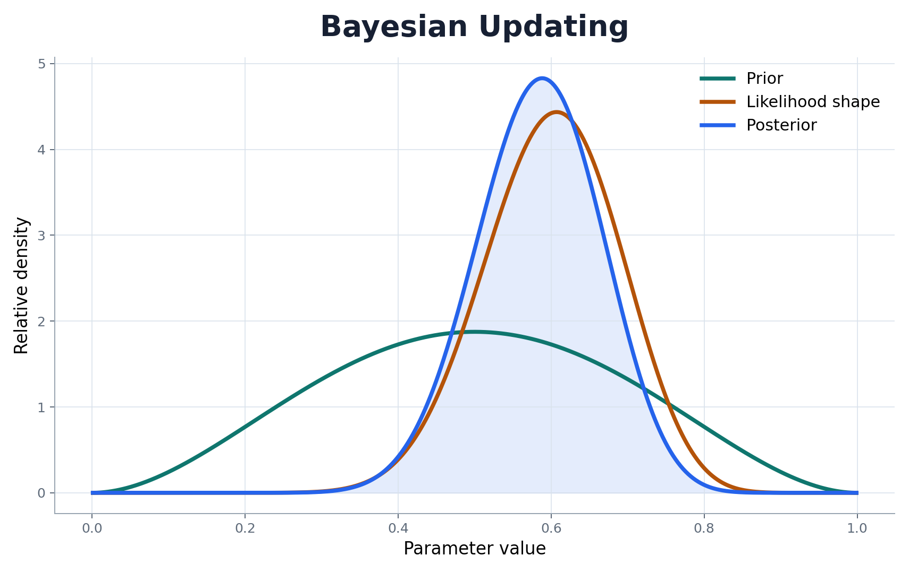

Bayesian Reasoning
Learn how evidence updates uncertainty and why posterior distributions are more useful than single estimates.
A complete research-oriented course from Bayes theorem to MCMC, hierarchical modeling, regression, decision analysis, and capstone reporting.

The course is organized around complete statistical workflows: model design, prior selection, computation, diagnostics, interpretation, and communication.
Learn how evidence updates uncertainty and why posterior distributions are more useful than single estimates.
Use simulation, Monte Carlo, MCMC, PyMC, and ArviZ to fit models that do not have closed-form solutions.
Prepare model reports, posterior visualizations, diagnostic summaries, and capstone research outputs.
| Week | Module | Outcome |
|---|---|---|
| 1 | Bayesian Thinking | Understand uncertainty and evidence updating. |
| 2 | Probability Review | Use conditional probability and Bayes theorem. |
| 3 | Priors, Likelihoods, and Posteriors | Translate questions into Bayesian models. |
| 4 | Conjugate Models | Solve beta-binomial, gamma-Poisson, and normal models. |
| 5 | Monte Carlo Computation | Approximate posterior summaries by simulation. |
| 6 | MCMC | Run chains and diagnose convergence. |
| 7 | Hierarchical Models | Model grouped data with partial pooling. |
| 8 | Bayesian Regression | Fit linear, logistic, and count models. |
| 9 | Model Checking | Evaluate predictive fit and compare models. |
| 10 | Decision Analysis | Turn posterior uncertainty into decisions. |
| 11 | Causal and Time-Series Extensions | Extend Bayesian thinking to advanced applications. |
| 12 | Capstone Workflow | Complete a reproducible Bayesian project. |
Begin with the syllabus, then move through the weekly modules and labs. Each assignment is designed to become part of the final capstone portfolio.